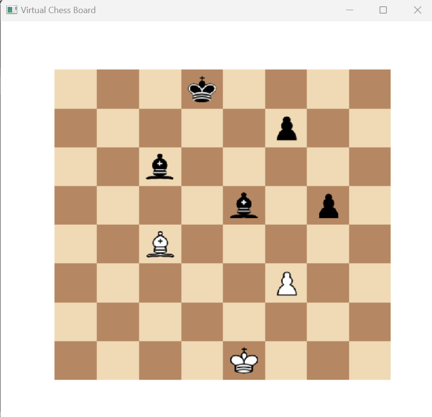
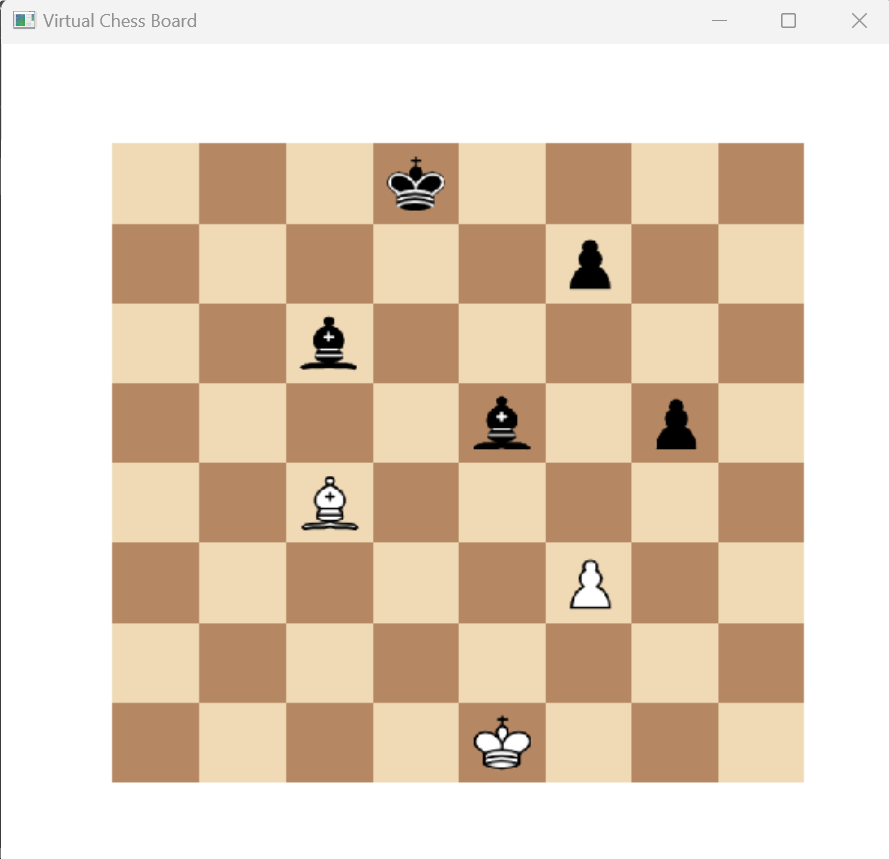
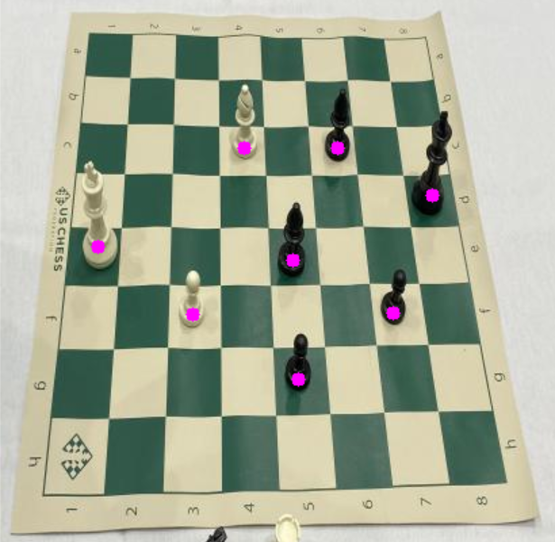
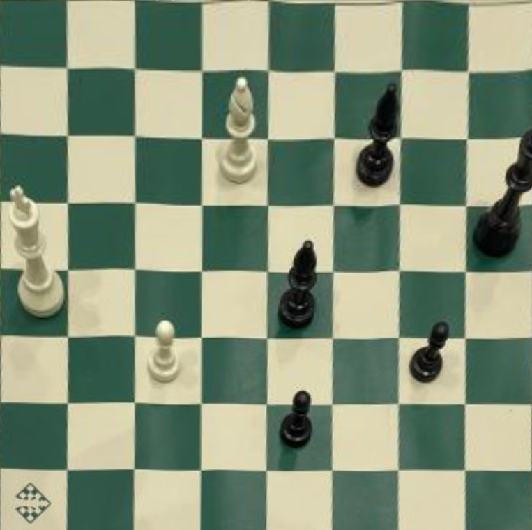

Projects
Project 1: Chess Vision AI
Computer vision to detect chess pieces on a chessboard to analyze the position on a device using Stockfish (until I develop my own chess engine). Works on pictures and in real-time on video, displaying the evaluation and best move on the same image.
 

Algorithm Idea:
- Corner Detection: Identify the four corners of the chessboard.
- Piece Detection: Recognize pieces and their bounding boxes.
- Calculate Coordinates: Obtain center coordinates for each detected piece. 
- Homography Transformation: Transform the board to a top-down view using the detected corners. 
- Board Orientation: Ensure correct board orientation by matching colors and identifying king locations.
- Square Mapping and FEN Positioning: Convert piece positions into FEN notation.
- Move Analysis: Display current board position and run it through Stockfish to find the best move.
Project 2: VIT for Biomedical
Graph Neural Representations of Mammographic Images for Explainable Breast Cancer Detection
A deep learning framework that integrates graphs with Vision Transformers to generate an efficient classifier for breast mammography images cancer from the InBreast dataset and its location.
Dataset Used: InBreast

The idea is to divide the image into patches, creating a graph. Graphs are used in medical image analysis to represent spatial relationships between image pixels. Each tile is transformed into a feature using CNN, then these features are related and understood through a transformer to localize and connect the tiles and identify cancer. This approach improves explainability and accuracy.
Enhanced Interpretability
Comparison with standard models: ResNet, AlexNet, etc.
Future Potential: Extend to other medical imaging tasks.
Results:
Keywords: Mammographic images, graph convolutional network, vision transformer, deep learning, breast cancer.
Most projects can be seen on my GitHub.